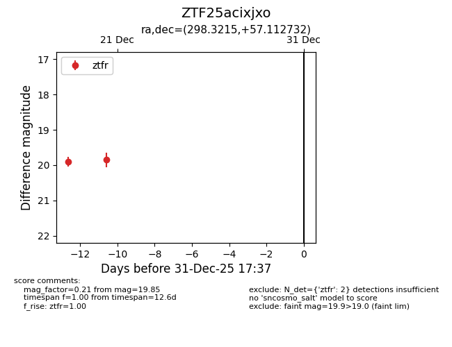
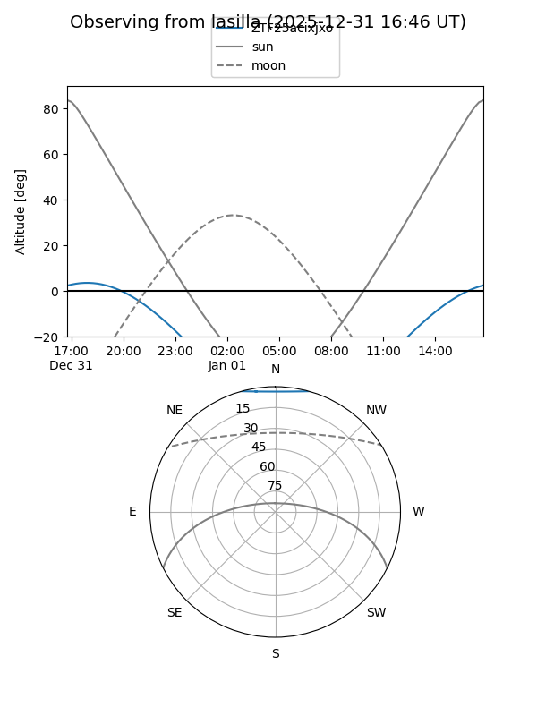
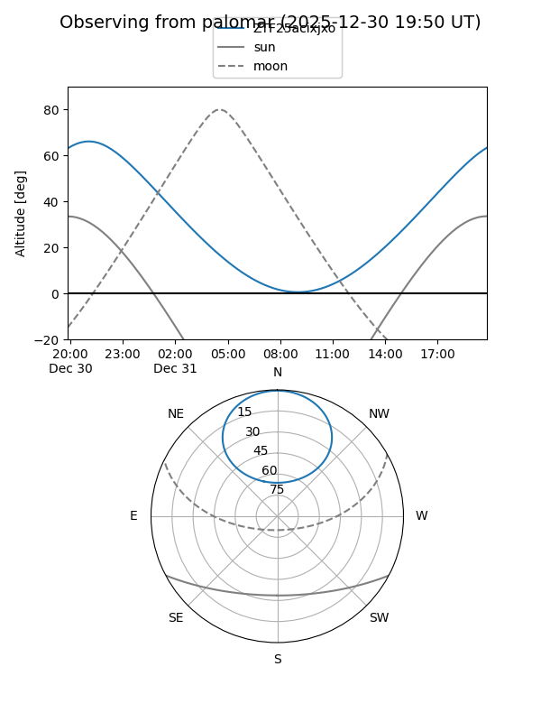

ZTF25acixjxo
Target ZTF25acixjxo at 2025-12-21 04:08
Aliases and brokers:
FINK: fink-portal.org/ZTF25acixjxo
Lasair: lasair-ztf.lsst.ac.uk/objects/ZTF25acixjxo
ALeRCE: alerce.online/object/ZTF25acixjxo
alt names
ZTF25acixjxo (ztf,fink_ztf)
Coordinates:
equatorial (ra, dec) = 298.3215,+57.11273
equatorial (HMS+DMS) = 19:53:17.16,+57:06:45.83
galactic (l, b) = (90.1739,+14.71866)
Flags:
Photometry:
last ztfr=19.85
2 ztfr detections
Lightcurve

Visibility


Additional plots